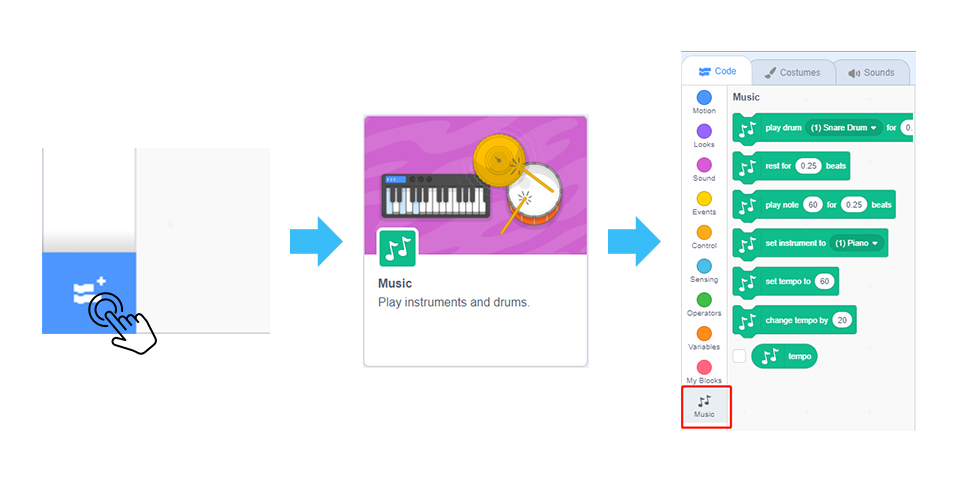
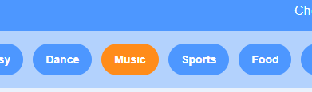
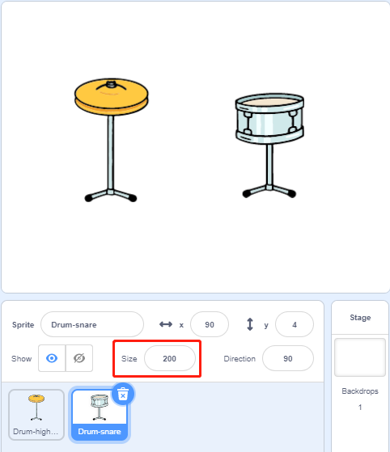
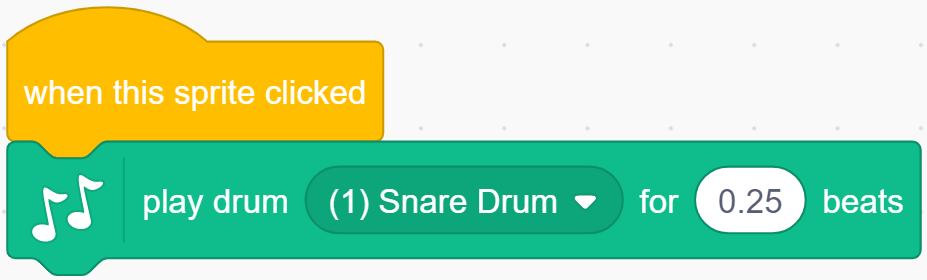
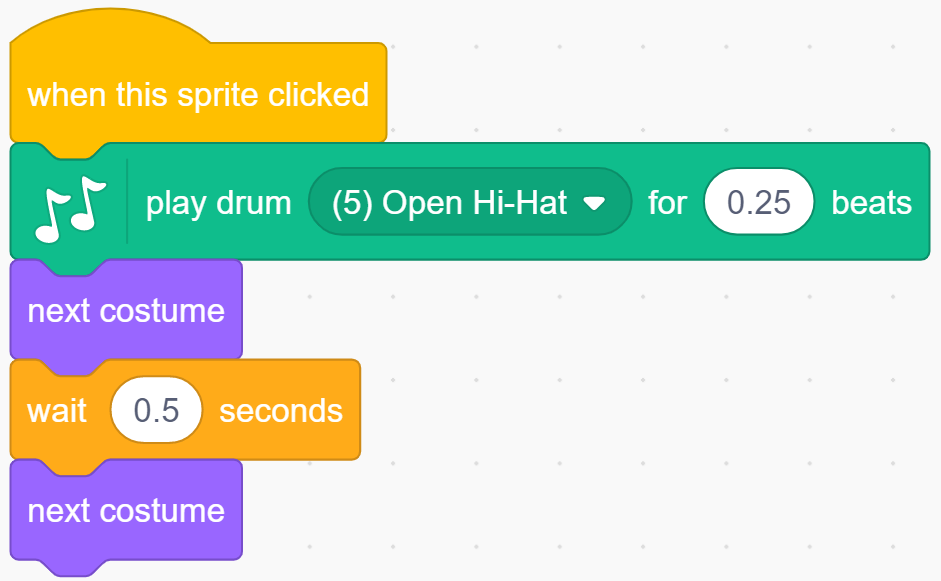
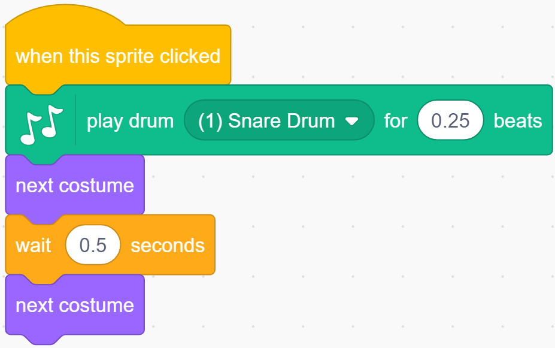

Note
Hello, welcome to the SunFounder Raspberry Pi & Arduino & ESP32 Enthusiasts Community on Facebook! Dive deeper into Raspberry Pi, Arduino, and ESP32 with fellow enthusiasts.
Why Join?
Expert Support: Solve post-sale issues and technical challenges with help from our community and team.
Learn & Share: Exchange tips and tutorials to enhance your skills.
Exclusive Previews: Get early access to new product announcements and sneak peeks.
Special Discounts: Enjoy exclusive discounts on our newest products.
Festive Promotions and Giveaways: Take part in giveaways and holiday promotions.
👉 Ready to explore and create with us? Click [here] and join today!
Make Music
Description
Everyone has been to the concert hall. It is filled with a dazzling array of musical instruments. These musical instruments make wonderful sounds under the performance of musicians.
Today we will also be a musician and add some musical instruments on the stage of Scratch. When you click on different instruments, they will emit corresponding instrument sounds.
Click the green flag to start.
Or click Make Music, and then learn online tutorial on the Scratch official website.
Required Components
A Screen
Scratch 3 (either online or offline)
You Will Learn
Use the Scratch Add Extension function to add music extension.
Modify the initial size of the sprite.
Let the sprites do some actions.
Lesson Guide
We Need the Drums.
Click on the “Add Extension” icon at the bottom left of Scratch, select Music, and then you will find a new extension-Music on the left side of Scratch.
{kind=link}

Delete the original sprite, add Drum-highhat sprite and Drum-snare sprite.
{kind=link}

Adjust the Drum-highhat sprite and Drum-snare sprite to the appropriate size.
{kind=link}

Play Drum-highhat.
Click on the Drum-highhat sprite and drag out the 「play drum…」 block in the Music expansion module.
{kind=link}

Change the option to (5) Open Hi-Hat, then use the “next costume” block to switch the appearance of Drum-highhat.
{kind=link}

Now, you can play the Drum-highhat.
Play Drum-snare.
Click on the Drum-snare sprite and drag out the 「play drum…」 block in the Music expansion module.

Change the option to (1) Snare Drum, then use the “next costume” block to switch the appearance of Drum-snare.
{kind=link}

Now, you can play theDrum-snare.
Challenge
I believe that you will be smart enough to program and implement this game soon. Next, we will add some challenges to enrich our game content.
Add Drum sprite, Drum Kit sprite and Drum-cymbal sprite, modify their size, and choose suitable sound effects. In this way we have made a drum set.
Sprite |
Size |
Instrument tone options |
|---|---|---|
Drum |
200 |
(3)Side Stick |
Drum Kit |
150 |
(2)Bass Drum |
Drum-cymbal |
200 |
(4)Crash Cymbal |